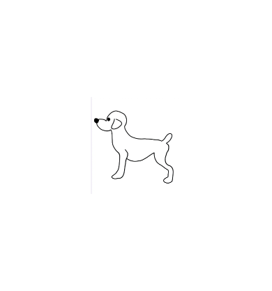
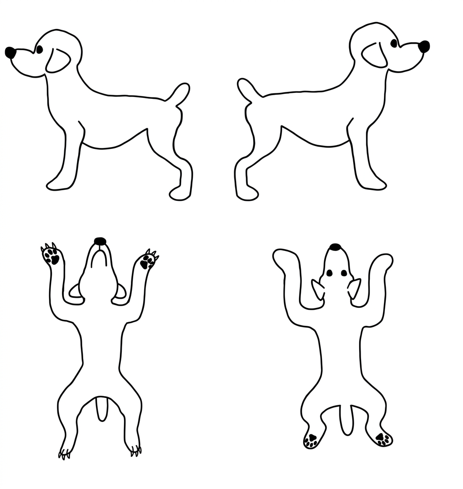
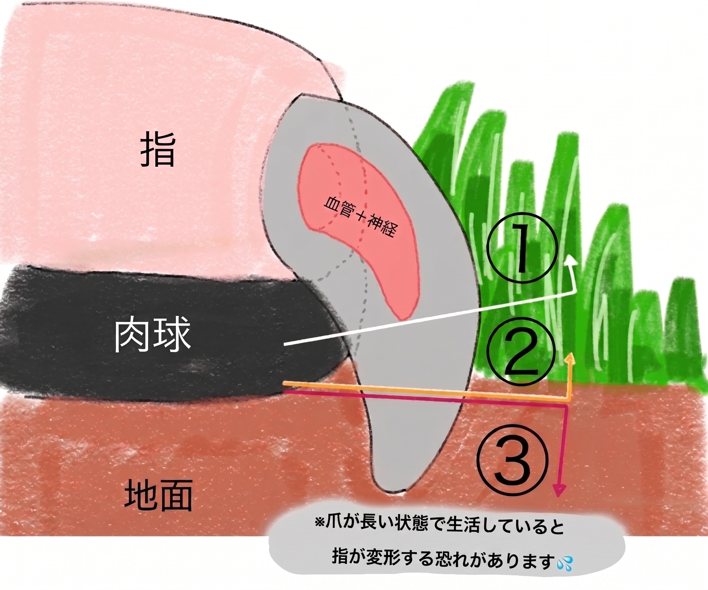
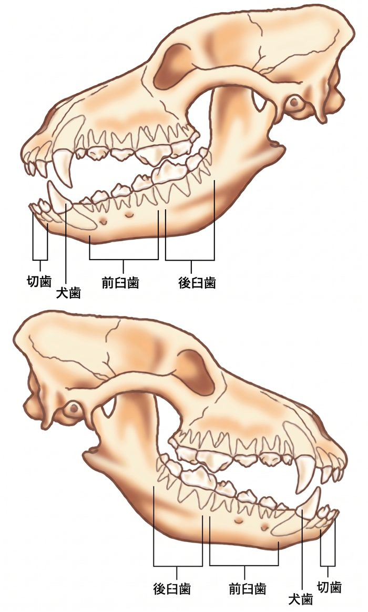

2026/12/5
今月も うっとり
かわいく仕上がりました
アメージング・ジュエルT・皮膚spa でふんわり。
毛艶もよく、とても健康的な仕上がりです。
今日の 様子 をお届け
トリミングチェック簿
展開して記録する詳細 ▾

今月の 健康 チェック

皮膚スパ×被毛スパ
気になる箇所をマーキング詳細 ▾


体重
2.79kg詳細 ▾
目指すベスト体重 2.5kg まであと少し

皮膚
—詳細 ▾
皮膚チェック

耳
右1・左1詳細 ▾
右
1
2
3
左
1
2
3
左右とも汚れが少なく良好です。
※ 1:良好 / 2:要注意 / 3:処置必要

爪
Lv.1詳細 ▾
1
2
3

適切な長さにカット済み。
※ 1:適切 / 2:長め / 3:深爪傾向
歯
歯石詳細 ▾
キレイ
維持
歯石

奥歯に軽度の歯石。歯みがきガム併用を。
今月の使用オプション
✓アメージング
✓シセルリノ
✓ジュエルT
✓ジュエルM
NAMAKERA
キラトリ
グロスチャー
✓皮膚spa
✓被毛spa
担当からの一言
今月もとっても良い仕上がりでした！次回もよろしくお願いします。